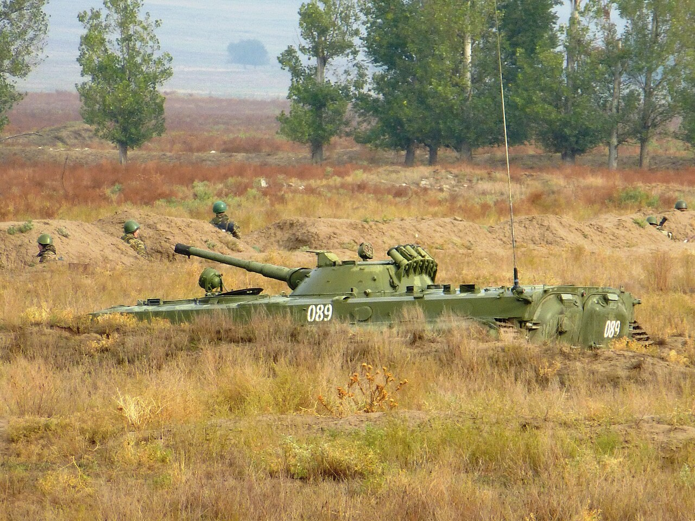

Қосымша Additional Дополнительно
Күш, төзімділік және салауатты әдеттер — ұрысқа дайындықтың негізі. Strength, endurance and healthy habits — the basis of combat readiness. Сила, выносливость и здоровые привычки — основа боевой готовности.

Дене дайындығы — әскери қызметшінің дене қасиеттерін, қозғалыс дағдыларын және ұрысқа қабілеттілігін дамытуға арналған жоспарлы сабақтар жүйесі. Салауатты өмір салты (СӨС) — денсаулықты сақтап, нығайтатын күнделікті әдеттер жиынтығы: қозғалыс белсенділігі, дұрыс тамақтану, күн тәртібі, гигиена және зиянды әдеттерден бас тарту. Бірге алғанда олар ұрысқа дайындықтың, шыдамдылық пен ауыртпалыққа төзімділіктің негізін құрайды. Physical training (PT) is a planned system of activities that develops a service member's physical qualities, motor skills and combat capability. A healthy lifestyle is the set of daily habits that preserve and strengthen health: physical activity, sound nutrition, a daily routine, hygiene and avoidance of harmful habits. Together they form the basis of combat readiness, stamina and resistance to hardship. Физическая подготовка — планомерная система занятий, развивающая физические качества, двигательные навыки и боеспособность военнослужащего. Здоровый образ жизни (ЗОЖ) — совокупность ежедневных привычек, сохраняющих и укрепляющих здоровье: двигательная активность, правильное питание, режим дня, гигиена и отказ от вредных привычек. Вместе они составляют основу боевой готовности, выносливости и устойчивости к нагрузкам.
КүшStrengthСила
кедергіні жеңу қабілетіability to overcome resistanceспособность преодолевать сопротивление
ТөзімділікEnduranceВыносливость
ұзақ жұмысқа шыдауsustaining prolonged effortвыдерживать длительную работу
ЖылдамдықSpeedБыстрота
тез әрекет етуacting in the least timeдействовать за минимум времени
ЕптілікAgilityЛовкость
қозғалысты тез игеруcoordinating complex movementкоординация сложных движений
ИілгіштікFlexibilityГибкость
буындағы қозғалыс амплитудасыrange of motion in the jointsамплитуда движений в суставах
| ЖаттығуExerciseУпражнение | Дамытатын қасиетQuality developedРазвиваемое качество | Норматив мысалы (ер бала)Example standard (young men)Пример норматива (юноши) |
|---|---|---|
| Тартылу (турник)Pull-ups (bar)Подтягивания на перекладине | күшstrengthсила | ≈ 10–15 рет≈ 10–15 reps≈ 10–15 раз |
| Бұғаналау (еденнен)Push-ups (floor)Отжимания от пола | күш, төзімділікstrength, enduranceсила, выносливость | ≈ 30–40 рет≈ 30–40 reps≈ 30–40 раз |
| 100 м жүгіру100 m sprintБег на 100 м | жылдамдықspeedбыстрота | ≈ 14–16 с≈ 14–16 s≈ 14–16 с |
| Кросс 1 км / 3 кмCross-country 1 km / 3 kmКросс 1 км / 3 км | төзімділікenduranceвыносливость | 3 км ≈ 12–14 мин3 km ≈ 12–14 min3 км ≈ 12–14 мин |
| Іш бұлшықетіне жаттығуAbdominal exercisesУпражнения на пресс | күш, төзімділікstrength, enduranceсила, выносливость | 1 минутта ≈ 40–50 рет≈ 40–50 reps in 1 min≈ 40–50 раз за 1 мин |
| Шаттл жүгіру 10 × 10 мShuttle run 10 × 10 mЧелночный бег 10 × 10 м | ептілік, жылдамдықagility, speedловкость, быстрота | ≈ 25–28 с≈ 25–28 s≈ 25–28 с |
| Кедергі жолағыObstacle courseПолоса препятствий | кешенді дайындықall-round trainingкомплексная подготовка | уақытқаtimedна время |
| Гранат лақтыруGrenade throwМетание гранаты | күш, дәлдікstrength, accuracyсила, точность | алыстыққа / дәлдіккеfor distance / accuracyна дальность / точность |
Мәндер шамамен берілген және жасы, жынысы мен дайындық деңгейіне қарай нормативтермен нақтыланады. Values are approximate and are set precisely by the standards for the given age, sex and level of training. Значения ориентировочные и уточняются нормативами в зависимости от возраста, пола и уровня подготовки.
Тұрақты тамақтану режимі (тәулігіне 3–4 рет); ақуыз, май, көмірсу және витаминдер мен минералдардың теңгерімі; жеткілікті су — белсенді жүктемеде тәулігіне ≈ 2–3 л. Энергия шығыны ауыр дайындықта тәулігіне 4000 ккал-ға жетуі мүмкін, сондықтан рацион жүктемеге сай болуы керек. A regular meal schedule (3–4 times a day); a balance of proteins, fats, carbohydrates and vitamins and minerals; enough water — about 2–3 L a day under heavy load. Energy expenditure during hard training can reach 4000 kcal a day, so the diet must match the load. Регулярный режим питания (3–4 раза в день); баланс белков, жиров, углеводов и витаминов с минералами; достаточно воды — около 2–3 л в сутки при активной нагрузке. Энерготраты при тяжёлой подготовке могут достигать 4000 ккал в сутки, поэтому рацион должен соответствовать нагрузке.
Дене, нысанды киім мен аяқ киім тазалығы; күнделікті жуыну, тіс пен қол гигиенасы; аяқ күтімі — құрғақ шұлық, дұрыс өлшенген аяқ киім, сүйел мен жұқпалы аурулардың алдын алу. Тазалық — инфекция мен эпидемияға қарсы бірінші қорған. Cleanliness of the body, uniform and footwear; daily washing, dental and hand hygiene; foot care — dry socks, properly fitted boots, preventing blisters and contagious diseases. Hygiene is the first defence against infection and epidemics. Чистота тела, формы и обуви; ежедневное умывание, гигиена зубов и рук; уход за ногами — сухие носки, правильно подобранная обувь, профилактика потёртостей и заразных болезней. Гигиена — первый барьер против инфекций и эпидемий.